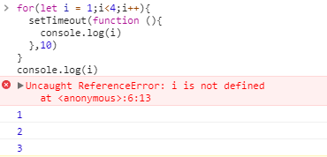

ES2015开始，JavaScript中提供了另外两个用来声明变量的关键字，分别是let和const，这篇文章主要从规范的角度来解释一些let的行为表现。
for循环中的let
以下两段代码，除了var换成let，其他都一样，但是执行结果却不一样.

有以下疑惑：
- 按照以前的理解，setTimeout执行的时候，for循环已经执行完了，此时i应该是4才对。let为何能让setTimeout执行时取到for循环执行到的那一步的i值，而不是一律打印4？。
- for循环执行后，为何i会报ReferenceError而var不会？。
for语句的执行
首先肯定要看for语句是怎么执行的，是在规范的13.7.4.7中定义的，如下图所示：
简单来说就是如下几步：
- 以当前执行上下文的词法环境oldEnv为outer，创建新的声明式词法环境loopEnv
- 把let所定义的变量在loopEnv中创建绑定。
- 把当前执行上下文的词法环境设为loopEnv。
- 执行let声明语句
- 执行 ForBodyEvaluation
- 把当前执行上下文的词法环境还原为oldEnv。
这里帮我们解答了疑惑2，当执行for循环时，会创建一个新的词法环境，然后在这个新的词法环境对变量进行绑定，所以执行完for循环，词法环境就回到之前的那个词法环境了，console.log(i)当然会报ReferenceError。要解答疑惑1还得继续看ForBodyEvaluation是怎么执行的。
ForBodyEvaluation
这个方法的执行很简单的描述就是如下：
- 执行CreatePerIterationEnvironment
- 执行for循环内的语句和increment（就是for循环中的例如i++语句）
- 如果循环能继续，则执行CreatePerIterationEnvironment，然后回到第二步
CreatePerIterationEnvironment
这个函数才是最终体现let的特殊性的，在规范中的说明如下：
就是：
- 以当前执行上下文的词法环境lastIterationEnv的outer为outer（也就是进入for循环之前的词法环境），创建新的声明式词法环境thisIterationEnv
- 在thisIterationEnv中为let定义的变量创建绑定，并且把lastIterationEnv中对应变量的值在thisIterationEnv中初始化
- 把当前执行上下文的词法环境设为thisIterationEnv
这下就明朗了，并且解答了第一个疑惑。因为CreatePerIterationEnvironment函数是每一次for循环都会执行的，所以每执行一次for循环，都会创建一个环境变量，里面绑定了let声明的变量i，并且初始化的值为当前的i值。然后for循环内的语句是在这个新创建的词法环境下执行的，所以能依次输出1,2,3
let是否提升
先贴一段代码：
对于代码为什么会报错，大家都知道，let声明不会被提升，所以不能在声明i之前使用i，会有一个暂时性死区。但是暂时性死区是怎么形成，对应到规范中是怎么描述的呢？以及规范里是怎么处理let声明变量，以及为何会报错的？
对于let声明的变量是怎么处理的，由于声明语句可能是在全局环境、块、函数中执行，所以规范里有好几个地方说明了这个步骤，但是都差不多，我们就以全局环境执行时为例，在规范的15.1.1中：
关于let声明的语句在第16步，也就是说，它会并且只做了envRec.CreateMutableBinding(dn, false)这么一个操作。还专门说明了，只是实例化并没有初始化（因为对于var声明的变量，其值会被初始化为undefined，所以这里要特别说明没有进行初始化）。那好，为什么实例化没有初始化，就会报错呢？i = 1这个语句是一个赋值表达式，看规范中是怎么定义其执行过程的，如下图
那么i就是LeftHandSideExpression，一路查规范，最终lref也就是i是一个Reference，然后执行PutValue(lref, rval)，然后查PutValue的执行规范，
最后是到词法环境的SetMutableBinding函数：
其中有一句话说明了，如果N也就是i是还没有被初始化，那么会抛出ReferenceError异常。到这里终于完整了理顺了整个代码执行过程了。
let遇到typeof
这个问题是和朋友讨论问题时遇到的一个点，觉得有意思，就记录下来。众所周知，typeof是唯一一个可以操作未定义的变量的操作符，那么typeof操作一个let声明但是没有赋值的变量会是怎么样？
直接看规范中typeof操作符的定义：
对于未声明的变量，是会返回undefined。所以对于let声明的变量，出错是处在GetValue这一步，这一步最终调用的是词法环境的GetBindingValue，而词法环境的这个方法：
同样的，对于未初始化的变量，会抛出ReferenceError异常。
总结
通过以上几个例子可以发现，由于以前的规范就规定了在执行声明语句前，会把var的声明操作前置在所有语句执行前，并且初始化为undefined。这其实可以算是JavaScript语言的一个缺陷。在未执行声明语句之前，竟然就能访问这个变量，并且还把其初始化为undefined。undefined可是一个合法的值，这就相当于JavaScript引擎帮我们插入了一段代码，这不符合我们的正常思维，也是不合理的。所以ES2015以后推出let和const这种机制来修正这个缺陷，在执行声明语句前使用变量，会抛出错误。
还有就是typeof，typeof能对未定义的变量操作，并且返回undefined，其实也是JavaScript的缺陷，既然let的作用是必须执行前才可使用，那么一视同仁，typeof一样的抛出错误。如果typeof不抛出错误也返回undefined，那就和let设计的初衷相违背了。